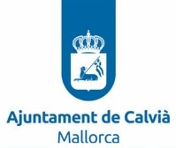
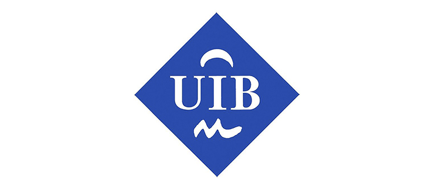

Datos particulares
Ingeniero Informático con más de 20 años de experiencia profesional en proyectos informáticos
DNI43074370Q
NombrePedro Ignacio Tous Durán
Fecha Nacimiento
TitulaciónLicenciado en informática por la UIB
Teléfono666 888 888
Emailptousd@uoc.edu
Dirección ActualMi Casa, Mallorca
Experiencia laboral
Ajuntament de Calvià

971139100
C/ Bujosa Sans Batle 07183 Illes Balears
Puestos de trabajo
-
Ingeniero informática (A1)Desde el 04/10/2019
-
Técnico de desarrollo informático (A2)16/12/2013 - 03/10/2019
-
Analista programador (Grupo A2)19/07/2007 - 15/12/2013
-
Analista programador (Grupo C1)01/07/2005 - 18/07/2007
-
Programador Informático (Grupo C1)05/08/1996 - 30/06/2005
Funciones realizas
- Implantación de las utilidades de firma electrónica de la Intranet
- Desarrollo del módulo para el uso de Códigos seguros de verificación (CSV)
- Colaboración activa con el equipo de implantación de la administración electrónica
- Diseño e implementación del módulo forms (sistema para agilizar la puesta en marcha de trámites online, con pagos por TPV e identificación con certificados digitales)
-
Evaluación de software externo e integración de los productos seleccionados con nuestros sistemas
Ejemplos
- Herramienta integra de firma XADES del ministerio de hacienda
- Herramienta ginside para la generación de documentos electrónicos en formato ENI
- Sistema PINBAL de la DGTIC que permite compartir datos entre administraciones
- Gestor documental alfresco
- Gestor de proyectos Onlyoffice
- Análisis, desarrollo y mantenimiento de las siguientes aplicaciones
- Área de servicios económicos: Plusvalias, IVTM y Comercios
- Área de contratación: Gestión de expedientes de contratación
- Área del SAC: Gestión del padrón municipal de habitantes
- Área de mantenimiento: Gestión de Ots y Control de Stocks de Almacén
- Área de Deportes: Gestión de polideportivos
- Área de Sanciones e Infracciones: Gestión de expedientes sancionadores
- Instalación, gestión y mantenimiento de servidores con sistema operativo linux
Universiat de les Illes Balears

971 173 000
Carretera de Valldemossa, km 7.5, 07122 Palma, Illes Balears
Puestos de trabajo
-
Profesor Asociado01/10/2000 - 30/09/2007
Cursos impartidos
-
Informática AplicadaLicenciatura Administración Empresas2000 - 2005
-
Herramientas informáticas y matemáticasLicenciatura Matemáticas2001 - 2002
-
Ampliación de Programación Orientada a ObjetosIngeniería Técnica Informática2003 - 2007
-
Sistemas OperativosIngeniería Técnica Informática2005 - 2007
Formación
-
Dirección estratégica y gestión operativa de las TI90h
-
Ingeniería de software avanzada300h
-
Gestión de equipos21h
-
Planificación y gestión de proyectos en la administración pública25h
-
Introducción a los frameworks Java25h
-
Enterprise JavaBeans20h
-
Administración de servidores basados en el Sistema Operativo Linux40h
-
Apcahe + Tomcat20h
-
Análisi y Diseño Orientado a Objetos20h
-
Introducción a la programación orientada a objetos con java30h